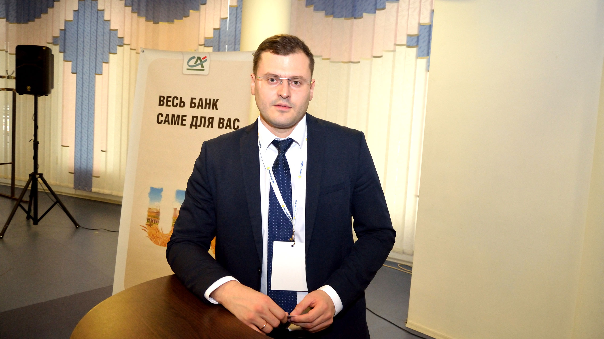

Французькі інновації
в Україні
31 жовтня у рамках виставки «ІнтерАГРО 2018» відбулася конференція
«День Франції в Україні». Організаторами заходу виступили Посольство
Франції в Україні, Crédit Agricole Bank та ТОВ «Київський міжнародний
контрактовий ярмарок». Головна тема конференції — «Французькі рішення:
інноваційні технології, селекція, фінансування».
Олег Коваль,
генеральный директор ТОВ «Київський міжнародний контрактовий
ярмарок»
Як Національний павільйон Франції, який цього року налічував 11
компаній, так і Дні Франції в Україні в рамках виставки
«ІнтерАГРО» стали традиційними. За це подяка Посольству Франції в
Україні, а також Національному агентству з підтримки французької
економіки. На Днях Франції в Україні були розглянуті багато
питань, важливих для аграрного бізнесу України. Я хочу побажати
українським аграріям, а також представникам французьких компаній
гарного завершення аграрного сезону та успіху в бізнесі.
Лариса Бондарєва,
заступник Голови Правління Crédit Agricole Bank
— Традиційно Crédit Agricole Bank підтримує найважливіші заходи
сільськогосподарської галузі України. Для нас надзвичайно важливо
брати участь у конференції, присвяченій ефективності та
інноваційним технологіям в агросекторі. Також для нас важливо
об’єднувати французький досвід та українську практику. Ми багато
років говоримо про аграрний потенціал України, і з року в рік
агросектор поступово його реалізовує. Звичайно, є ще багато
завдань, які необхідно вирішити, та багато складнощів, з якими
потрібно впоратися, але значний прогрес відмічається. Crédit
Agricole Bank активно залучений у розвиток та підтримку сільського
господарства України останні 10 років. І хочу запевнити: ми не
плануємо зупинятися.

Еволюція українського агробізнесу
Ігор Гуржій, начальник управління агроекспертизи департаменту
підтримки агробізнесу Crédit Agricole Bank
— Зараз агросектор є основним рушієм економіки України.
Сільгосппродукція експортується, отримуються валютні надходження.
Україна — лідер з експорту зернових культур та соняшникової олії, що є
продуктом переробки. До такого рівня ми дійшли, щорічно збільшуючи
продуктивність роботи агробізнесу, врожайність. Останні роки
агровиробники звертають увагу передусім на ефективність виробництва, на
перше місце стає контроль виробничої собівартості та прибутковість
виробництва.
Сьогодні український сільгоспвиробник перебуває на новому рівні
виробництва та продуктивності. Україна отримує рекордні врожаї.
2018-й, на мою думку, буде з найвищими показниками врожаю зернових
за останні 10 років.
Багато хто говорить про валовий врожай на рівні 100–120 млн т через
декілька років, я з цим погоджуюся. Так, це може бути при подальшому
покращенні технологій, оптимізації мінерального живлення. Також із року
в рік Україна збільшує експортні можливості. Експортувати — дуже добре,
але на цьому необхідно також заробляти й виробнику.

Французько-українська співпраця
Ніколя Перен, радник із сільського господарства Посольства Франції в
Україні
— Співпраця між Україною та Францією розвивається дуже активно, і 2018
рік тому підтвердження. На сьогодні в агропромисловому комплексі України
працюють близько 50 підприємств із французькими інвестиціями. Можна
виділити три основні напрями. Перший — виробництво насіння польових
культур. У цьому секторі працюють такі компанії, як Euralis, MAS Seeds.
Вони інвестували у зведення двох насіннєвих заводів із соняшника та
кукурудзи. Також дуже активна компанія Limagrain.
У жовтні в Парижі відбулася нарада робочої групи з питань сільського
господарста, яку очолили представники міністерств обох країн. Ця зустріч
проходила в контексті Міжнародної продовольчої виставки (SIAL), в якій
взяли участь ряд українських компаній. На зустрічі були визначені
пріоритети співпраці в агропромисловому комплексі між Україною та
Францією, а також дії, яку будуть реалізовуватися в різних секторах,
відповідно до визначених пріоритетів.
Перший з них — галузь насінництва. Понад 10 років французькі
підприємства та установи допомагали Україні розробляти свої інструменти,
норми сертифікації насіння та пристосовувати їх до тих, що
використовують в Європі. У Франції накопичений великий досвід у цій
галузі, і наша країна щиро ділиться ним з українськими інституціями.
Було вирішено продовжувати цю співпрацю та зробити особливий наголос на
підготовку інспекторів, підтримку прав власності на сорти насіння. Тобто
забезпечити виплати роялті.
Другий важливий напрям стосується захисту географічних походжень, тих
регіонів, у яких виробляється продукція. Французькі експерти, що
працюють у Національному інституті походження та якості продукції,
проводять багато заходів в Україні, щоб допомогти організувати належне
законодавство з цих питань за європейськими стандартами.
Робота продовжується в рамках європейської програми технічної
допомоги Україні. Її ключове завдання — створити умови для
виробництва та валоризації деяких українських продуктів шляхом
присвоєння їм захищених географічних зазначень. Так, йдеться про
сири, наприклад, бринзу, яка виготовляється в Південних Карпатах, а
також про карпатський мед.
Також хочу виокремити питання інновацій. Наші країни співпрацюють за цим
напрямом та зосереджені наразі на стартапах. На сьогодні вже працюють
два пілотні проекти, французькі рішення тестуються в українських умовах.
Наприклад, це керування даними щодо метеопрогнозу і метеокліматичних
умов. Передача даних буде здійснюватися між метеостанціями, датчиками на
метеостанціях і сервером.
У майбутньому ці технології можуть використовуватися й поза
агропромисловим сектором, в інших галузях економіки.
Інноваційний підхід до точного землеробства
Олександр Соловей (ліворуч) та Роман Яценко, регіональні представники
«КУН-Україна»
— Компанія «КУН-Україна» представила унікальні рішення для точного
розкидання добрив — систему розподілу CDA, автоматичне підлаштування
норми внесень добрив EMC на базі розкидача KUHN Axis.
Технологія EMC (електронне дозування) призначена для максимально точного
внесення добрив. Головна особливість — при внесенні добрив відсутній
ризик засмічення вихідного отвору: якщо змінюється об'єм потоку на
виході, система EMC автоматично коригує відкриття отвору і таким чином
забезпечує належну витрату речовини.
З перших метрів роботи система електронного дозування безперервно
контролює та коригує ступінь відкриття отвору і забезпечує максимальну
точність внесення добрив.
Принцип роботи системи EMC такий: система контролює дозування на правому
і лівому дисках кожної секунди. Наприклад, один диск може розкидати
добрива у правий бік 80 кг, а в лівий бік — 100–120 кг. Окрім цього, EMC
контролює дозування на кожному вихідному отворі. На звичайних
розкидачах, якщо отвір забивається, механізатор може і не помітити
проблеми та продовжувати рух. Із технологією від KUHN така проблема
анулюється, адже комп'ютер зчитує, що на диск не потрапляє необхідна
кількість добрив, і починає сигналізувати про це механізатору. Також
система буде інформувати про порожній бункер. Якщо ж розкидач заїжджає
на місцевість, де добрива вже були внесені, заслінки перекриваються.
Норми розкидання визначаються на самому комп'ютері, і незалежно від
швидкості розкидач буде давати встановлену норму добрив.
Ще одна інноваційна розробка від KUHN — система коаксіального
регулювання розподілу CDA, яка полягає у зміні робочої ширини та
точки падіння на сам диск.
Система CDA має спеціальну конструкцію дозуючих заслінок, що розташовані
близько до центру диска, та дозволяє регулювати подачу добрив на
лопатки, тим самим забезпечуючи постійний потік та рівномірне
розкидання. Окрім цього, у CDA втілене унікальне рішення: точка скидання
добрив змінюється за рахунок поворотної системи бункера, що забезпечує
швидку адаптацію до різних типів добрив. Розподіл добрив за допомогою
системи CDA виходить рівномірним, точним та з низьким коефіцієнтом
варіації.
Керувати цими технологіями можна з терміналів QUANTRON А та E2 від KUHN,
що під'єднуються до комп'ютерів John Deere, Trimble, RDS, SatPlan тощо.
Пульт управління керує роботою всього розкидача за допомогою вже
встановленої на ньому програми. Використовуючи пульт, оператор може
змінити норму внесення добрив, вимкнути секції з будь-якого боку та
закрити будь-яку із заслінок. Для фермерів, які бажають переходити на
технології точного землеробства, компанія «КУН-Україна» проводить
демонстраційні покази на полі, безпосередньо у господарстві аграрія.
KUHN Axis стане надійним вибором для вітчизняного фермера, адже
забезпечує рівномірність внесення, раціональне використання добрив та
простоту в користуванні. Сьогодні KUHN — один з найбільших виробників
навісної та причіпної техніки у світі. Компанія виготовляє понад 3050
різних найменувань, випускає більш ніж 65 000 одиниць на рік та завжди
на вістрі інновацій.

Easy VR — технологія точного землеробства від «Лімагрейн»
Олександр Астраханцев, директор з маркетингу «Лімагрейн Україна»
— Французька компанія Limagrain займається насінням провідних польових
та овочевих культур, зерновими інгредієнтами. Наразі компанія має філії
в 55 країнах, займається торгівлею зерна у понад 140 країнах світу, а
кількість працівників перевищує 9600 осіб. Limagrain — найбільший
виробник насіння пшениці в Європі, другий за розміром у світі виробник
насіння овочів, найбільший на ринку Франції виробник хлібобулочних
виробів.
В Україні філіал французької компанії працює з 2008-го. За десятирічну
присутність на вітчизняному ринку «Лімагрейн Україна» презентувала
чимало цікавих технологічних рішень. І 2018 рік не став
виключенням.
За 10 років роботи ми посіли другу позицію в Україні по соняшнику, третю
по кукурудзі, п'яту по ріпаку, хоча займаємося його продажем тут лише
другий рік. Весь наш бізнес обертається навколо насіння, та водночас ми
не залишаємося осторонь сучасних тенденцій, так званої
цифровізації.
Цього року у «Лімагрейн» з'явилася технологія точного землеробства —
Easy VR. Проект вже запущений в Україні та стартував на площі
близько 4000 га. Сервіс Easy VR полягає у зміні норми висіву в
рамках окремого поля. На кожному полі врожайність може бути
неоднорідна через низку особливостей: різна структура ґрунту,
щільність, низька забезпеченість поживними речовинами, погодні умови
тощо.
Однак зазвичай фермери використовують загальний підхід до всього поля і
внаслідок цього отримують зниження потенціалу культури.
Сервіс Easy VR від «Лімагрейн» пропонує фермерам диференційовано
підходити до різних продуктивних зон: застосовувати змінні норми висіву,
оптимізувати генетичний потенціал гібридів, потенціал полів, максимально
ефективно використовувати техніку та як наслідок — досягати найбільших
врожаїв та результатів.
Другий важливий фактор для використання Easy VR — наявність сівалки з
так званим контролем секцій. Це дає можливість під час посіву змінювати
норму від більшої до меншої та навпаки. Третій важливий фактор
—моніторинг врожайності на техніці. Обов'язково робляться так звані
контрольні смуги, де культура висівається зі звичною для господарства
густотою. За нашими даними, в Україні з використанням технології Easy VR
спостерігається додавання 2% врожаю. І це ще не остаточні дані. В Європі
є результати і 6%. У грошовому еквіваленті це окупність приблизно 1:5,
1:6, іноді навіть більше.
Інноваційні підходи до управління виробничим процесом
Юрій Лисак, головний агроном «Агро-Регіон»
— Компанія «Агро-Регіон» відома своїм інноваційним підходом до
роботи. На наших полях постійно тестуються останні технології,
найсучасніший захист рослин, техніка, послуги супутникового зв’язку,
дрони тощо.
З 2014 року ми почали випробування польотів дронів над полями. З 2015-го
моніторимо наші поля за допомогою супутників. У 2016-му з’явилися
автоматизовані централізовані склади для обліку запчастин, зі складанням
на полицях, оцифровуванням, розумінням того, де яка запчастина лежить.
Також у 2016 році ми обладнали всі наші посівні трактори автопілотами,
для того щоб проводити точний посів усіх культур, та закупили чотири
метеостанції. З їх допомогою ми можемо переглядати історію погоди, на
мобільному додатку бачити поточні умови, кількість опадів. Відтак,
володіємо повною інформацією щодо погодних умов.
У 2017 році ми запустили власну насіннєву лабораторію, де
перевіряємо все насіння, яке отримуємо від наших постачальників.
Також у 2017-му ми впровадили диференційований обробіток ґрунту. Наразі
з цією технологією ми обробили вже близько 4000 га.
Крім того, минулого року ми запровадили регулярні обстеження полів за
допомогою дронів. Усі наші сівалки обладнали моніторами, і тепер ми
володіємо всією інформацією про висів на кожному полі.
Але крім досвіду використання високих технологій, ми отримали ще і
розуміння важливості кадрів. Ми покладаємося на молодь, тих людей, які
бажають вчитися, розвиватися та вміють приймати миттєві рішення.
Ребрендинг як засіб досягнення міжнародних амбіцій компанії
Сергій Чеботарьов, директор з продажів та маркетингу «MAS Seeds
Україна»
— MAS Seeds — насіннєвий бренд, що належить Кооперативній групі
MAЇSADOUR, сільськогосподарському кооперативу на південному заході
Франції. Річний обіг компанії становить 1,3 млрд євро.
MAЇSADOUR — це 8000 французьких фермерів, які об’єдналися в кооператив
задля пошуку оптимальних рішень щодо виробництва та збуту продукції
рослинництва та тваринництва.
MAS Seeds — насіннєвий підрозділ кооперативу. У квітні компанія провела
масштабний ребрендинг, змінивши назву з MAЇSADOUR Semences на MAS Seeds.
Новий логотип втілює інноваційний підхід компанії. Логотип ніби
з’являється із землі, як сходи з насіння. Головна мета насінини
всередині логотипу MAS Seeds — продемонструвати спеціалізацію бізнесу.
Дорога всередині насінини — це шлях до інновацій, майбутнього. Новий
логотип MAS Seeds має ту саму кольорову гаму, що і кооператив MAЇSADOUR.
А головну думку висловлює слоган — «United to grow» («Разом, щоб
зростати»).
MAS Seeds спеціалізується на чотирьох стратегічних напрямах роботи:
селекція інноваційних гібридів кукурудзи на зерно, соняшника, кукурудзи
на силос, озимого ріпака, люцерни; виробництво насіння найвищої якості,
розробка та впровадження новітніх агротехнологічних рішень у сільському
господарстві; агротехнологічний супровід споживачів продукції під
брендом компанії. Компанія вирощує 350 гібридів та сортів насіння. MAS
Seeds сьогодні — це 12 філіалів у 12 країнах світу, вісім
науково-дослідницьких станцій, дві з яких розташовані в Україні.
Наші гібриди кукурудзи повністю адаптивні до різних типів ґрунтів та
кліматичних умов України. І такі критерії стосуються всіх культур.
Адже в першу чергу ми працюємо для фермера та підвищення
ефективності його роботи.
З насінням озимого ріпака компанія MAS Seeds цього року працює вперше.
Ми зареєстрували перший гібрид, який продемонстрував найвищу
результативність у регіоні. Таким чином, наступного року ми вийдемо з
продажем насіння ріпака. Можу із впевненістю сказати: на ринок MAS Seeds
вийде із кращим продуктом.
Окремо важливо відмітити, що компанія MAS Seeds прийняла рішення робити
обробку насіння ключових гібридів кукурудзи та соняшника інсектицидом.
Така обробка буде базовою, тобто відбуватиметься за рахунок МАS Seeds.
Ми не будемо підвищувати ціну на насіння, для фермерів ця опція буде
безкоштовною. Ми хочемо зробити ще один крок назустріч
сільгоспвиробникам для того, щоб з нашою допомогою дати їм можливість
отримати найвищі результати по врожайності та рентабельності
виробництва.
Базове протруєння — не єдиний корисний бонус від компанії. MAS Seeds має
в своєму арсеналі й цифрові інноваційні рішення для аграріїв. Одне з них
— додаток PRECOSEM. Програма дозволяє отримувати сповіщення про
оптимальний час посіву та інші рекомендації для кожного поля та гібриду.
Додаток безкоштовний, і подібні нагадування можуть допомогти при
подальшому плануванні роботи, підготовки техніки тощо.
MAS Seeds має в Україні дві науково-дослідні станції. Перша працює в
селі Могилів, що на Дніпропетровщині, де розташований і власний завод
«MAS Seeds Україна», один з найпотужніших у країні — 1 млн посівних
одиниць на рік. На початку червня відкрилася науково-дослідна станція в
селі Велика Олександрівка на Київщині, де розташований і центральній
офіс MAS Seeds в Україні. Неподалік центрального офісу є демонстраційне
поле, де висіяна вся лінійка гібридів компанії, лабораторія.
Основа мета нашої компанії — протягом п’яти років отримати український
гібрид кукурудзи, адаптивний, пластичний, що враховує всю специфіку саме
нашої країни, ґрунтів, погодних та кліматичних умов.
Компанія активно розвивається, про що свідчить стратегія розвитку в
нашій країні: досягнути у 2026 році показника 1 млн га, що будуть
засіяні гібридами кукурудзи, соняшника, озимого ріпака MAS Seeds в
Україні.
Та активний розвиток буде неможливим, якщо наші клієнти не будуть
отримувати вигоду, не будуть розвиватися з нашими продуктами, не будуть
отримувати найвищий показник врожайності. По всіх господарствах ми
працюємо системно. Надаємо сервіс, підтримку, контролюємо врожайність.
Завдяки нашому спектру послуг для аграріїв ми можемо рекомендувати
відповідний гібрид залежно від особливостей ґрунту, регіону, кліматичних
умов тощо. Усе це ми робимо, аби досягти найкращих показників разом з
фермером.
Інноваційні рішення Schneider Electric для АПК України
Михайло Бубнов, генеральний директор компанії «Шнейдер Електрік
Україна»
— Компанія «Шнейдер Електрік» займається електрообладнанням та
сонячними електростанціями. Це і постачання устаткування, і виконання
проектів, і сервісне забезпечення електрообладнанням. Серед ключових
слоганів нашої компанії — доступ до електроенергії є одним із базових
прав людини.
Наша компанія пропонує комплексні рішення і для агросектора.
Наприклад, використовуючи наше устаткування, фермер може забезпечити
економію електроенергії.
Це можливо за допомогою екологічної структури ekostracht —
починаючи від простих датчиків температури, завершуючи мобільним
додатком.
Також наша компанія має рішення для сектора переробки, випуску,
зберігання продукції. Тобто весь цикл від вирощування зерна до
транспортування та зберігання забезпечує єдиний підхід ekostracht у
рамках компанії «Шнейдер Електрік».
Наші технології широко використовують у світі. В Україні, наприклад, на
кожному елеваторному комплексі працює устаткування компанії «Шнейдер
Електрік».
Україна має величезний потенціал в аграрній сфері. Ринок дуже швидко
розвивається, і наша компанія не стоїть на місці, а пропонує інноваційні
ідеї, технології, які будуть корисні для всіх аграріїв країни.
Фінансування агросектора України: основні тенденції
Наталія Порвіна, директор департаменту підтримки агробізнесу Crédit
Agricole Bank
— Сьогодні агробізнес дуже потужно розвивається, збільшуються посівні
площі, покращується врожайність. Компанії використовують нові
технології, інноваційні рішення та продукти. Зростання продуктивності,
відкриття нових ринків збуту — все це потребує залучення ресурсів. Разом
із тенденцією розвитку в агросекторі існують і тенденції щодо росту
фінансування агрогалузі. Потреби у фінансуванні в агропідприємств із
року в рік зростають. Частка агросектора у структурі банківського
фінансування збільшується.
Компанії все більше намагаються закуповувати якісне насіння, засоби
захисту рослин, мінеральні добрива, збільшують посівні площі.
Витрати на посівну та збір врожаю зростають у середньому на 15–20%
на рік.
Відповідно, все це потребує додаткового фінансування. Також збільшується
потреба у довгостроковому фінансуванні (фінансуванні інвестиційних
проектів, придбання агротехніки). Наразі агрокомпанії все більше уваги
приділяють структуруванню, розширенню логістичних систем, що також
потребує фінансування.
Починаючи з 2011 року дуже активно використовуються альтернативні
інструменти фінансування, зокрема авалювання векселів. Сьогодні цей
продукт дуже популярний серед агропідприємств, адже його вартість значно
менша, ніж стандартна ставка фінансування.
Економічна криза внесла корективи в діяльність агропідприємств, усе
більше компаній приділяють увагу оцінці та управлінню своїми ризиками.
Сільськогосподарська діяльність по своїй суті схильна до багатьох
ризиків. Значною кількістю з них спеціалісти вже навчилися управляти,
але не всіма. Основні некеровані ризики — це погодні ризики, ризики, які
неможливо спрогнозувати та попередити, і при негативних обставинах вплив
їх може бути значним, а в окремих випадках і фатальним. Єдиним
інструментом, який знижує негативні наслідки впливу погоди, є
страхування. Тому Crédit Agricole Bank спільно з IFC, Syngenta та AXA
вивів на ринок продукт агрострахування (коли страхується майбутній
врожай).
Наразі агропідприємці очікують від банків комплексного обслуговування,
покриття всіх потреб підприємства. Crédit Agricole Bank надає клієнтам
не тільки фінансовий сервіс високої якості, а й ділиться з ними власним
досвідом. Цього року банк виявив ініціативу створити освітній проект
«Агро школа» для своїх співробітників. Проект спрямований на розширення
експертизи та поглиблення знань фахівців банку у сфері агробізнесу,
розуміння потреб аграріїв. Навчання в «Агро школі» побудоване у форматі
цілого курсу, який адаптований до виробничого циклу аграрних компаній. І
курс — це не просто теорія, а й практика — виїзди на підприємства, поля,
аби показати співробітникам, які технології використовують фермери, з
якими складнощами стикаються під час роботи, які ресурси використовують,
як адаптуються до погодних умов.
Можу із впевненістю сказати, що після виїздів у поля підхід до роботи з
аграрієм у наших співробітників змінюється. Вони краще розуміють бізнес
клієнтів, їх потреби та запити в різні періоди агроциклу, вони стають
ближчими до своїх клієнтів. Навчити розмовляти з агроклієнтами однією
мовою, мислити, як аграрій, — основна мета цього проекту.